2
Objetivo.
Identificar las partes del microscopio con la finalidad de comprender su función dentro del instrumento a través de un mapa interactivo.
Instrucciones
Observa la infografía del microscopio óptico, mecánico y luminoso que se te proporcionó.
Accede al mapa interactivo del microscopio que se encuentra a continuación .
En el mapa, haz clic en cada parte del microscopio y selecciona su nombre correcto de la lista que aparece.
Completa todo el mapa asegurándote de identificar correctamente todos los componentes de los sistemas: mecánico, óptico e iluminador.
Una vez terminado, revisa tus respuestas y corrige cualquier error usando la infografía como guía.
{"typeGame":"Mapa","instructions":"","showMinimize":false,"showActiveAreas":false,"author":"","url":"../content/resources/20251118050708SPJOBA/Micro_2.png","authorImage":"","altImage":"","itinerary":{"showClue":false,"clueGame":"","percentageClue":40,"showCodeAccess":false,"codeAccess":"","messageCodeAccess":""},"points":[{"id":"p963404295891","title":"Oculares","type":0,"url":"../content/resources/20251118050708SPJOBA/Ocular.jpeg","video":"","x":0.6402499961853028,"y":0.06366668701171875,"x1":0,"y1":0,"footer":"Son las lentes que están en la parte superior del microscopio, por donde observamos las muestras. Su función es aumentar la imagen que ya fue ampliada por los lentes del objetivo, para que podamos ver los detalles más pequeños.","author":"","alt":"","iVideo":0,"fVideo":0,"eText":"","iconType":0,"question":"","question_audio":"","toolTip":"","link":"","color":"#000000","fontSize":"14","map":{"id":"a963404295891","pts":[{"id":"p304716794446","title":"","type":0,"url":"","video":"","x":0,"y":0,"x1":0,"y1":0,"footer":"","author":"","alt":"","iVideo":0,"fVideo":0,"eText":"","iconType":0,"question":"","question_audio":"","toolTip":"","link":"","color":"#000000","fontSize":"14","map":{"id":"a304716794446","url":"","alt":"","author":"","pts":[]},"slides":[{"id":"s304716794446","title":"","url":"","author":"","alt":"","footer":""}],"activeSlide":0}],"url":"","alt":"","author":"","active":0},"slides":[{"id":"s963404295891","title":"","url":"","author":"","alt":"","footer":""}],"activeSlide":0,"audio":""},{"id":"p696590806288","title":"tubo","type":0,"url":"../content/resources/20251118050708SPJOBA/Tubo.jpeg","video":"","x":0.5802499961853027,"y":0.17922225104437933,"x1":0,"y1":0,"footer":"Es la parte del microscopio que une los oculares con los objetivos. Su función es mantener la distancia correcta entre las lentes para que la imagen se vea clara y bien enfocada.","author":"","alt":"","iVideo":0,"fVideo":0,"eText":"","iconType":0,"question":"","question_audio":"","toolTip":"","link":"","color":"#000000","fontSize":"14","map":{"id":"a696590806288","pts":[{"id":"p630589700093","title":"","type":0,"url":"","video":"","x":0,"y":0,"x1":0,"y1":0,"footer":"","author":"","alt":"","iVideo":0,"fVideo":0,"eText":"","iconType":0,"question":"","question_audio":"","toolTip":"","link":"","color":"#000000","fontSize":"14","map":{"id":"a630589700093","url":"","alt":"","author":"","pts":[]},"slides":[{"id":"s630589700093","title":"","url":"","author":"","alt":"","footer":""}],"activeSlide":0}],"url":"","alt":"","author":"","active":0},"slides":[{"id":"s696590806288","title":"","url":"","author":"","alt":"","footer":""}],"activeSlide":0,"audio":""},{"id":"p1673031050162","title":"Revolver","type":0,"url":"../content/resources/20251118050708SPJOBA/revolver.jpeg","video":"","x":0.5714999961853028,"y":0.33700002723269995,"x1":0,"y1":0,"footer":"Es la pieza giratoria del microscopio que sostiene los lentes objetivos y permite cambiarlos para aumentar o disminuir el acercamiento de la imagen.","author":"","alt":"","iVideo":0,"fVideo":0,"eText":"","iconType":0,"question":"","question_audio":"","toolTip":"","link":"","color":"#000000","fontSize":"14","map":{"id":"a1673031050162","pts":[{"id":"p76853703370","title":"","type":0,"url":"","video":"","x":0,"y":0,"x1":0,"y1":0,"footer":"","author":"","alt":"","iVideo":0,"fVideo":0,"eText":"","iconType":0,"question":"","question_audio":"","toolTip":"","link":"","color":"#000000","fontSize":"14","map":{"id":"a76853703370","url":"","alt":"","author":"","pts":[]},"slides":[{"id":"s76853703370","title":"","url":"","author":"","alt":"","footer":""}],"activeSlide":0}],"url":"","alt":"","author":"","active":0},"slides":[{"id":"s1673031050162","title":"","url":"","author":"","alt":"","footer":""}],"activeSlide":0,"audio":""},{"id":"p953649880065","title":"Objetivos","type":0,"url":"../content/resources/20251118050708SPJOBA/Objetivo_sopa.jpeg","video":"","x":0.6052499961853027,"y":0.43033336215549045,"x1":0,"y1":0,"footer":"Son los lentes que están cerca de la muestra en el microscopio. Su función es aumentar la imagen del objeto que se está observando. Cada lente tiene un aumento diferente (por ejemplo, 4x, 10x o 40x).","author":"","alt":"","iVideo":0,"fVideo":0,"eText":"","iconType":0,"question":"","question_audio":"","toolTip":"","link":"","color":"#000000","fontSize":"14","map":{"id":"a953649880065","pts":[{"id":"p886693120428","title":"","type":0,"url":"","video":"","x":0,"y":0,"x1":0,"y1":0,"footer":"","author":"","alt":"","iVideo":0,"fVideo":0,"eText":"","iconType":0,"question":"","question_audio":"","toolTip":"","link":"","color":"#000000","fontSize":"14","map":{"id":"a886693120428","url":"","alt":"","author":"","pts":[]},"slides":[{"id":"s886693120428","title":"","url":"","author":"","alt":"","footer":""}],"activeSlide":0}],"url":"","alt":"","author":"","active":0},"slides":[{"id":"s953649880065","title":"","url":"","author":"","alt":"","footer":""}],"activeSlide":0,"audio":""},{"id":"p765461277932","title":"Platina","type":0,"url":"../content/resources/20251118050708SPJOBA/platina.jpeg","video":"","x":0.5352499961853028,"y":0.5881111399332682,"x1":0,"y1":0,"footer":"Es la parte plana del microscopio donde se coloca la lámina con la muestra que se va a observar. Tiene unas pinzas que la sujetan y un agujero al centro por donde pasa la luz.","author":"","alt":"","iVideo":0,"fVideo":0,"eText":"","iconType":0,"question":"","question_audio":"","toolTip":"","link":"","color":"#000000","fontSize":"14","map":{"id":"a765461277932","pts":[{"id":"p1411943812377","title":"","type":0,"url":"","video":"","x":0,"y":0,"x1":0,"y1":0,"footer":"","author":"","alt":"","iVideo":0,"fVideo":0,"eText":"","iconType":0,"question":"","question_audio":"","toolTip":"","link":"","color":"#000000","fontSize":"14","map":{"id":"a1411943812377","url":"","alt":"","author":"","pts":[]},"slides":[{"id":"s1411943812377","title":"","url":"","author":"","alt":"","footer":""}],"activeSlide":0}],"url":"","alt":"","author":"","active":0},"slides":[{"id":"s765461277932","title":"","url":"","author":"","alt":"","footer":""}],"activeSlide":0,"audio":""},{"id":"p641207269074","title":"Pinzas","type":0,"url":"../content/resources/20251118050708SPJOBA/pinzas.jpeg","video":"","x":0.5527499961853027,"y":0.5370000272326999,"x1":0,"y1":0,"footer":"Son las piezas metálicas que están sobre la platina del microscopio y sirven para sujetar la lámina con la muestra, evitando que se mueva mientras se observa.","author":"","alt":"","iVideo":0,"fVideo":0,"eText":"","iconType":0,"question":"","question_audio":"","toolTip":"","link":"","color":"#000000","fontSize":"14","map":{"id":"a641207269074","pts":[{"id":"p148650555134","title":"","type":0,"url":"","video":"","x":0,"y":0,"x1":0,"y1":0,"footer":"","author":"","alt":"","iVideo":0,"fVideo":0,"eText":"","iconType":0,"question":"","question_audio":"","toolTip":"","link":"","color":"#000000","fontSize":"14","map":{"id":"a148650555134","url":"","alt":"","author":"","pts":[]},"slides":[{"id":"s148650555134","title":"","url":"","author":"","alt":"","footer":""}],"activeSlide":0}],"url":"","alt":"","author":"","active":0},"slides":[{"id":"s641207269074","title":"","url":"","author":"","alt":"","footer":""}],"activeSlide":0,"audio":""},{"id":"p254566872655","title":"Condensador","type":0,"url":"../content/resources/20251118050708SPJOBA/condensador.jpeg","video":"","x":0.5489999961853027,"y":0.6458889177110461,"x1":0,"y1":0,"footer":"Es la parte del microscopio que concentra y dirige la luz hacia la muestra que está en la platina, para que se vea más clara y brillante.","author":"","alt":"","iVideo":0,"fVideo":0,"eText":"","iconType":0,"question":"","question_audio":"","toolTip":"","link":"","color":"#000000","fontSize":"14","map":{"id":"a254566872655","pts":[{"id":"p135533404323","title":"","type":0,"url":"","video":"","x":0,"y":0,"x1":0,"y1":0,"footer":"","author":"","alt":"","iVideo":0,"fVideo":0,"eText":"","iconType":0,"question":"","question_audio":"","toolTip":"","link":"","color":"#000000","fontSize":"14","map":{"id":"a135533404323","url":"","alt":"","author":"","pts":[]},"slides":[{"id":"s135533404323","title":"","url":"","author":"","alt":"","footer":""}],"activeSlide":0}],"url":"","alt":"","author":"","active":0},"slides":[{"id":"s254566872655","title":"","url":"","author":"","alt":"","footer":""}],"activeSlide":0,"audio":""},{"id":"p1431705886052","title":"Diafragma","type":0,"url":"../content/resources/20251118050708SPJOBA/diafragma.jpeg","video":"","x":0.5102499961853028,"y":0.6569998847113715,"x1":0,"y1":0,"footer":"Es la parte del microscopio que regula la cantidad de luz que pasa hacia la muestra. Sirve para que la imagen se vea más clara o más tenue, según lo necesites.","author":"","alt":"","iVideo":0,"fVideo":0,"eText":"","iconType":0,"question":"","question_audio":"","toolTip":"","link":"","color":"#000000","fontSize":"14","map":{"id":"a1431705886052","pts":[{"id":"p1283811625410","title":"","type":0,"url":"","video":"","x":0,"y":0,"x1":0,"y1":0,"footer":"","author":"","alt":"","iVideo":0,"fVideo":0,"eText":"","iconType":0,"question":"","question_audio":"","toolTip":"","link":"","color":"#000000","fontSize":"14","map":{"id":"a1283811625410","url":"","alt":"","author":"","pts":[]},"slides":[{"id":"s1283811625410","title":"","url":"","author":"","alt":"","footer":""}],"activeSlide":0}],"url":"","alt":"","author":"","active":0},"slides":[{"id":"s1431705886052","title":"","url":"","author":"","alt":"","footer":""}],"activeSlide":0,"audio":""},{"id":"p226982196535","title":"Fuente de Luz","type":0,"url":"../content/resources/20251118050708SPJOBA/lampara.jpeg","video":"","x":0.5227499961853027,"y":0.7525555759006076,"x1":0,"y1":0,"footer":"Es la parte del microscopio que ilumina la muestra desde abajo para que se pueda observar con claridad a través de las lentes.","author":"","alt":"","iVideo":0,"fVideo":0,"eText":"","iconType":0,"question":"","question_audio":"","toolTip":"","link":"","color":"#000000","fontSize":"14","map":{"id":"a226982196535","pts":[{"id":"p1706312875512","title":"","type":0,"url":"","video":"","x":0,"y":0,"x1":0,"y1":0,"footer":"","author":"","alt":"","iVideo":0,"fVideo":0,"eText":"","iconType":0,"question":"","question_audio":"","toolTip":"","link":"","color":"#000000","fontSize":"14","map":{"id":"a1706312875512","url":"","alt":"","author":"","pts":[]},"slides":[{"id":"s1706312875512","title":"","url":"","author":"","alt":"","footer":""}],"activeSlide":0}],"url":"","alt":"","author":"","active":0},"slides":[{"id":"s226982196535","title":"","url":"","author":"","alt":"","footer":""}],"activeSlide":0,"audio":""},{"id":"p1575219928311","title":"Base","type":0,"url":"../content/resources/20251118050708SPJOBA/base.jpeg","video":"","x":0.3327499961853027,"y":0.8681111484103733,"x1":0,"y1":0,"footer":"Es la parte inferior del microscopio que sostiene y da estabilidad a todo el instrumento.","author":"","alt":"","iVideo":0,"fVideo":0,"eText":"","iconType":0,"question":"","question_audio":"","toolTip":"","link":"","color":"#000000","fontSize":"14","map":{"id":"a1575219928311","pts":[{"id":"p379510064874","title":"","type":0,"url":"","video":"","x":0,"y":0,"x1":0,"y1":0,"footer":"","author":"","alt":"","iVideo":0,"fVideo":0,"eText":"","iconType":0,"question":"","question_audio":"","toolTip":"","link":"","color":"#000000","fontSize":"14","map":{"id":"a379510064874","url":"","alt":"","author":"","pts":[]},"slides":[{"id":"s379510064874","title":"","url":"","author":"","alt":"","footer":""}],"activeSlide":0}],"url":"","alt":"","author":"","active":0},"slides":[{"id":"s1575219928311","title":"","url":"","author":"","alt":"","footer":""}],"activeSlide":0,"audio":""},{"id":"p193864300190","title":"Tornillo macrométrico","type":0,"url":"../content/resources/20251118050708SPJOBA/macrometrico.jpeg","video":"","x":0.38899999618530273,"y":0.6881111314561632,"x1":0,"y1":0,"footer":"Es el botón grande del microscopio que sirve para subir o bajar la platina y así enfocar la muestra rápidamente.","author":"","alt":"","iVideo":0,"fVideo":0,"eText":"","iconType":0,"question":"","question_audio":"","toolTip":"","link":"","color":"#000000","fontSize":"14","map":{"id":"a193864300190","pts":[{"id":"p1029766355645","title":"","type":0,"url":"","video":"","x":0,"y":0,"x1":0,"y1":0,"footer":"","author":"","alt":"","iVideo":0,"fVideo":0,"eText":"","iconType":0,"question":"","question_audio":"","toolTip":"","link":"","color":"#000000","fontSize":"14","map":{"id":"a1029766355645","url":"","alt":"","author":"","pts":[]},"slides":[{"id":"s1029766355645","title":"","url":"","author":"","alt":"","footer":""}],"activeSlide":0}],"url":"","alt":"","author":"","active":0},"slides":[{"id":"s193864300190","title":"","url":"","author":"","alt":"","footer":""}],"activeSlide":0,"audio":""},{"id":"p1633139972909","title":"Tornillo micrométrico","type":0,"url":"../content/resources/20251118050708SPJOBA/macrometrico.jpeg","video":"","x":0.35149999618530275,"y":0.6592222494549221,"x1":0,"y1":0,"footer":"Es el botón pequeño del microscopio que se usa para ajustar el enfoque con precisión, después de usar el tornillo macrométrico.","author":"","alt":"","iVideo":0,"fVideo":0,"eText":"","iconType":0,"question":"","question_audio":"","toolTip":"","link":"","color":"#000000","fontSize":"14","map":{"id":"a1633139972909","pts":[{"id":"p1274060418930","title":"","type":0,"url":"","video":"","x":0,"y":0,"x1":0,"y1":0,"footer":"","author":"","alt":"","iVideo":0,"fVideo":0,"eText":"","iconType":0,"question":"","question_audio":"","toolTip":"","link":"","color":"#000000","fontSize":"14","map":{"id":"a1274060418930","url":"","alt":"","author":"","pts":[]},"slides":[{"id":"s1274060418930","title":"","url":"","author":"","alt":"","footer":""}],"activeSlide":0}],"url":"","alt":"","author":"","active":0},"slides":[{"id":"s1633139972909","title":"","url":"","author":"","alt":"","footer":""}],"activeSlide":0,"audio":""},{"id":"p405832350394","title":"Brazo","type":0,"url":"../content/resources/20251118050708SPJOBA/brazo.jpeg","video":"","x":0.3839999961853027,"y":0.44366670396592883,"x1":0,"y1":0,"footer":"Es la parte del microscopio que conecta la base con el tubo y sirve para sostener el microscopio correctamente al moverlo.","author":"","alt":"","iVideo":0,"fVideo":0,"eText":"","iconType":0,"question":"","question_audio":"","toolTip":"","link":"","color":"#000000","fontSize":"14","map":{"id":"a405832350394","pts":[{"id":"p1638809388440","title":"","type":0,"url":"","video":"","x":0,"y":0,"x1":0,"y1":0,"footer":"","author":"","alt":"","iVideo":0,"fVideo":0,"eText":"","iconType":0,"question":"","question_audio":"","toolTip":"","link":"","color":"#000000","fontSize":"14","map":{"id":"a1638809388440","url":"","alt":"","author":"","pts":[]},"slides":[{"id":"s1638809388440","title":"","url":"","author":"","alt":"","footer":""}],"activeSlide":0}],"url":"","alt":"","author":"","active":0},"slides":[{"id":"s405832350394","title":"","url":"","author":"","alt":"","footer":""}],"activeSlide":0,"audio":""}],"isScorm":0,"textButtonScorm":"Guardar la puntuación","repeatActivity":false,"textAfter":"","evaluation":3,"selectsGame":[{"typeSelect":0,"numberOptions":4,"quextion":"","options":["","","",""],"solution":"","solutionWord":"","percentageShow":35,"msgError":"","msgHit":""}],"isNavigable":true,"showSolution":true,"timeShowSolution":3,"version":2,"percentajeIdentify":100,"percentajeShowQ":100,"percentajeQuestions":100,"autoShow":false,"autoAudio":true,"optionsNumber":0,"evaluationF":false,"evaluationIDF":"","id":"202511618034360","order":"","msgs":{"msgSubmit":"Enviar","msgIndicateWord":"Proporcione una palabra o expresión","msgClue":"¡Genial! La pista es:","msgErrors":"Errores","msgHits":"Aciertos","msgScore":"Puntuación","msgMinimize":"Minimizar","msgMaximize":"Maximizar","msgFullScreen":"Pantalla Completa","msgNoImage":"Pregunta sin imágenes","msgSuccesses":"¡Correcto! | ¡Excelente! | ¡Genial! | ¡Muy bien! | ¡Perfecto!","msgFailures":"¡No era eso! | ¡Incorrecto! | ¡No es correcto! | ¡Lo sentimos! | ¡Error!","msgTryAgain":"Necesita al menos un %s% de respuestas correctas para conseguir la información. Vuelva a intentarlo.","msgEndGameScore":"Antes de guardar la puntuación comience la partida.","msgScoreScorm":"La puntuación no se puede guardar porque esta página no forma parte de un paquete SCORM.","msgPoint":"Punto","msgAnswer":"Responder","msgOnlySaveScore":"¡Sólo puede guardar la puntuación una vez!","msgOnlySave":"Sólo puede guardar una vez","msgInformation":"Información","msgYouScore":"Su puntuación","msgOnlySaveAuto":"Su puntuación se guardará después de cada pregunta. Sólo puede jugar una vez.","msgSaveAuto":"Su puntuación se guardará automáticamente después de cada pregunta.","msgSeveralScore":"Puede guardar la puntuación tantas veces como quiera","msgYouLastScore":"La última puntuación guardada es","msgActityComply":"Ya ha realizado esta actividad.","msgPlaySeveralTimes":"Puede realizar esta actividad cuantas veces quiera","msgClose":"Cerrar","msgPoints":"puntos","msgPointsA":"Puntos","msgQuestions":"Preguntas","msgAudio":"Audio","msgAccept":"Aceptar","msgYes":"Sí","msgNo":"No","msgShowAreas":"Mostrar áreas activas","msgShowTest":"Mostrar cuestionario","msgGoActivity":"Pulsa aquí para realizar esta actividad","msgSelectAnswers":"Selecciona las opciones correctas y pulsa sobre el botón 'Responder'.","msgCheksOptions":"Marca todas las opciones en el orden adecuado y pulsa sobre el botón 'Responder'.","msgWriteAnswer":"Escribe la palabra o expresión correcta y pulsa en el botón 'Responder'.","msgIdentify":"Identifica","msgSearch":"Buscar","msgClickOn":"Pulsa sobre","msgReviewContents":"Debes repasar el %s% de los contenidos de la actividad antes de completar el cuestionario.","msgScore10":"¡Todo perfecto! ¡Enhorabuena! ¿Deseas repetir esta actividad?","msgScore4":"No has superado esta prueba. Repasa sus contenidos e inténtalo de nuevo. ¿Deseas repetir la actividad?","msgScore6":"¡Estupendo! Has superado la prueba, pero seguro que lo puedes mejorar. ¿Deseas repetir esta actividad?","msgScore8":"¡Casi perfecto! Aún lo puedes hacer mejor. ¿Deseas repetir esta actividad?","msgNotCorrect":"¡No es correcto! Has pulsado sobre","msgNotCorrect1":"¡No es correcto! Has pulsado sobre","msgNotCorrect2":"y la respuesta correcta es","msgNotCorrect3":"¡Prueba otra vez!","msgAllVisited":"¡Genial! Has visitado los puntos necesarios.","msgCompleteTest":"Puedes completar el cuestionario.","msgPlayStart":"Pulse aquí para empezar","msgSubtitles":"Subtítulos","msgSelectSubtitles":"Selecciona un archivo de subtítulos. Formatos válidos:","msgNumQuestions":"Número de preguntas","msgHome":"Inicio","msgReturn":"Volver","msgCheck":"Comprobar","msgUncompletedActivity":"Actividad no completada","msgSuccessfulActivity":"Actividad superada. Puntuación: %s","msgUnsuccessfulActivity":"Actividad no superada. Puntuación: %s","msgTypeGame":"Mapa"}}
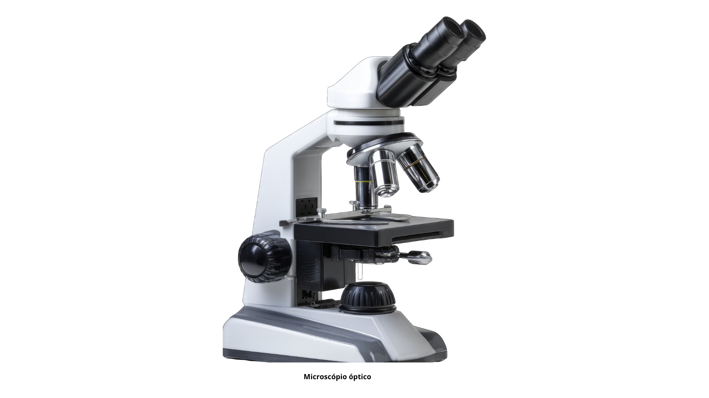
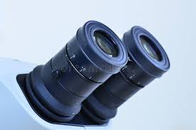
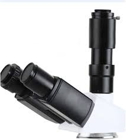
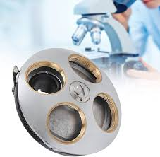
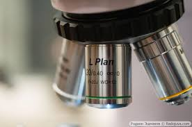
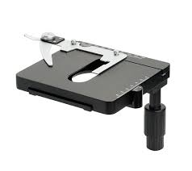
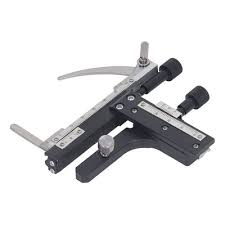
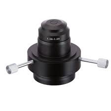
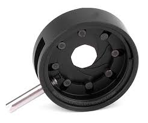
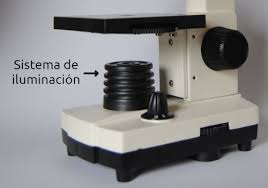
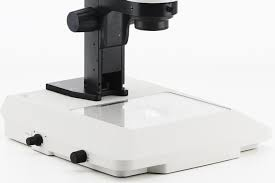
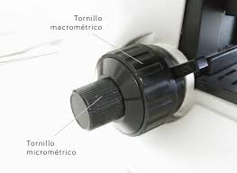
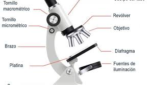
Su navegador no es compatible con esta herramienta.